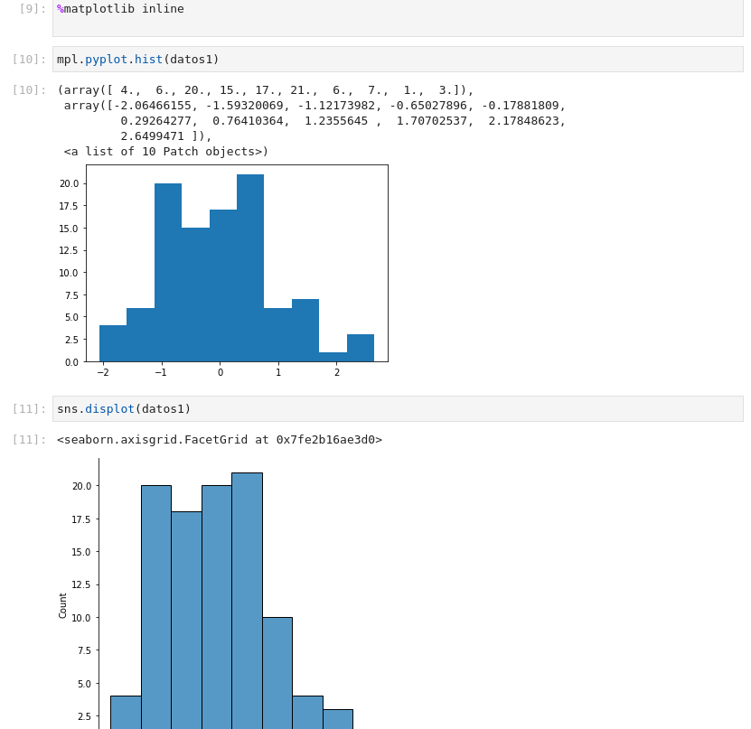
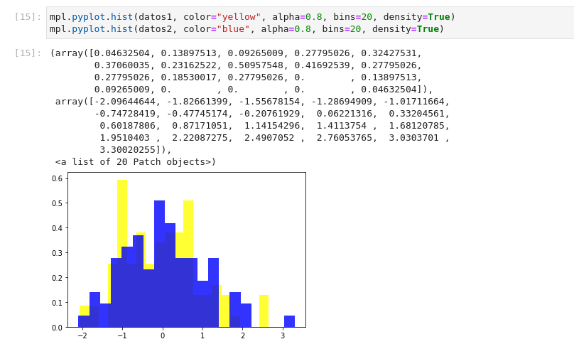
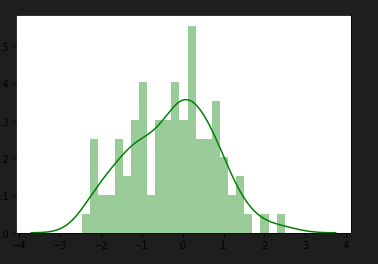
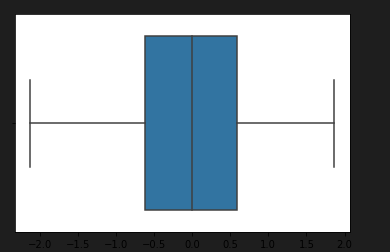
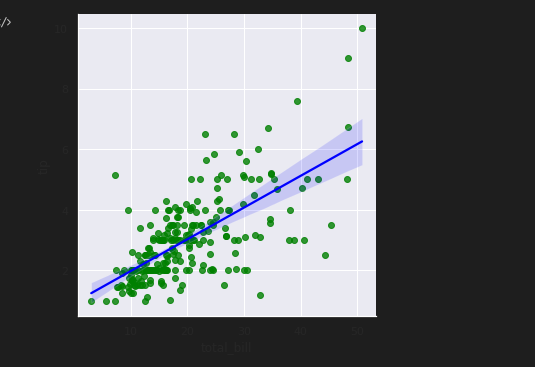
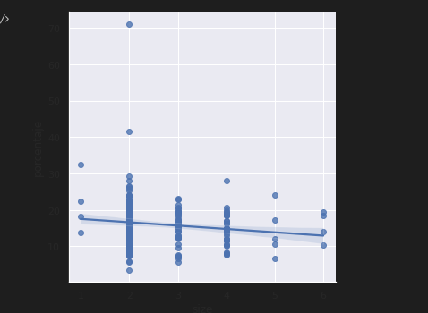
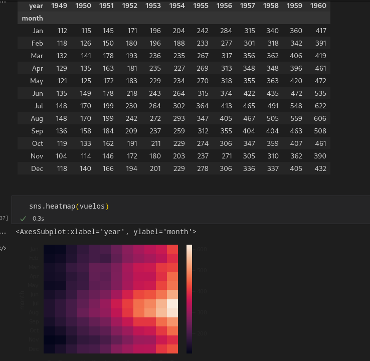
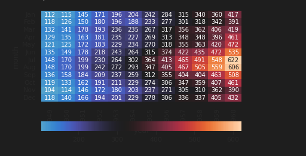
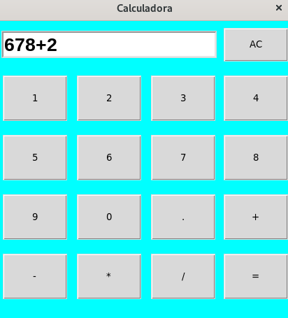
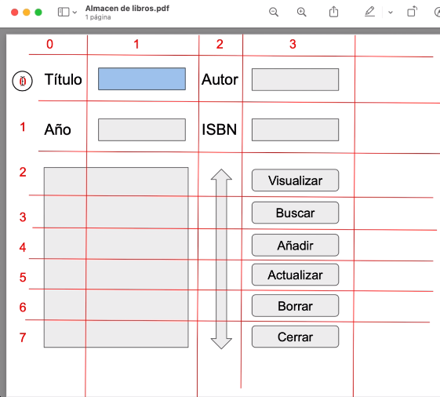

Intro Programación PYTHON
Shebang
# !/usr/bin/python3
# -*-coding: utf-8-*-
Server Python
python -m SimpleHTTPDServer 80
Mostrar algo
print("Uso windows")
Mostrar algo con formato
print("Hello World, my name is {}" .format(name))
print(f'My Python version is {version}')
Importar librerias
import platform
from xxxx import xx
Variables
x=100
y=True
z="Miguel"
Condicional
x = 25
y = 15
if x > y:
print("x is greater than y: where x is {} and y {}" .format(x,y))
elif x == y:
print("x and y are the same: where x is {} and y {}" .format(x,y))
else:
print("x is lesser than y: where x is {} and y {}" .format(x,y))
tengoHambre = True
y = "Necesito comer" if tengoHambre else "solo necesito beber"
a = True
b = False
# comparamos a y b
if a and b:
print('Expresiones son TRUE')
else:
print("Expresiones son False")
Bucle for (iterar elementos)
food = ["breakfast", "lunch", "snack", "dinner"]
for i in food:
print(i)
Bucle while
food = ["breakfast", "lunch", "snack", "dinner"]
while m < 4:
print(food[m])
m +=1
Funciones
def message():
print("Mi version de python es la {}" .format(platform.python_version()))
message()
def operation(n=25):
print(n)
return n*2
Test main
if __name__ == "__main__":
runMe()
name("Miguel")
name(2)
print(x)
Objetos
class Time:
h = "horas"
m = "minutos"
s = "segundos"
def hours(self):
print(self.h)
def minuts(self):
print(self.m)
def seconds(self):
print(self.s)
def main2():
how_time = Time()
how_time.hours()
how_time.minuts()
how_time.seconds()
main2()
Mayusculas, minusculas, letra capital
mayus = "hello world".upper()
minus = "hello world".lower()
capi = "hello world".capitalize()
Ver tipo de dato
print(type(w)) #float
Listas
x = [1,2,3,4]
print(x[2])
x[2] = 10
for i in x:
print(i)
# LISTA ACCIONES -- TUPLAS SON INMUTABLES Y NO SE PUEDE
def main():
lista = ['perro', 'gato', 'cerdo', 'caballo']
lista2 = ['perro', 'gato', 'cerdo', 'caballo']
print(lista[1]) # gato
print(lista[1:3]) # gato, cerdo
print(lista[0:5:2]) # perro, cerdo
print(lista.index('gato')) # 1, busca la posicion de esa palabra
lista.append('koala') # añade koala
lista.insert(0, 'vaca') # añade vaca en posicion 0
lista.remove("vaca") # borra de la lista vaca
lista.pop() # borra el ultimo elemento de la lista
lista.pop(1) # borra esa posicion de la lista
del lista[1] # borra de la lista ese elemento
del lista[0:1] # borra ese slicing
print(len(lista)) # cuenta en numero de elementos de la lista
lista.extend(lista2) # junta dos listas
print_lista(lista) # funcion de iterar la lista
# funcion para iterar la lista pasada por argumento
def print_lista(lista):
for i in lista:
print(i, end=' ', flush=True)
print()
Tuplas
t = (1,2,3,4,5)
# cosas con tuplas
## t[2] = 10 NO SE PUEDE ASIGNAR PARA CAMBIAR
print(t[2])
for e in t:
print(e)
Diccionarios
dic = { 'x' : 5, 'y' : 'miguel', 'z' : False }
# cosas con diccionarios
print(dic['y'])
dic['y'] = 'miguelito'
for id, valor in dic.items():
print(f"id: {id} valor: {valor}")
for e in dic.values():
print(e)
for e in dic:
print(f'el id es {e}')
print(f'el valor es {dic[e]}')
gente = {'1': "miguel", '2': "cristina", '3': "isabel"}
gente['4'] = 'maria'
for k in gente:
print(k)
for k,v in gente.items():
print(f'key: {k} valor: {v}')
for k in gente.keys():
print(f'key: {k}')
for v in gente.values():
print(f'valor: {v}')
Rangos
r = range(5) # no se puede asignar sino es con una lista
ra = list(range(5))
ra[2] = 20
rang = range(5,10,2) # del 5 al 10 de dos en dos
# cosas con rangos
for e in ra:
print(e)
for e in rang:
print(e)
List Comprension
# de una lista
lista = range(11)
tupla = ((0,1),(1,2),(2,3))
# creas una lista,tupla iterando lista y operaciones
lista2 = [ x * 2 for x in lista]
tupla2 = [ (y*2, x*2) for x,y in tupla]
# resultados
print(lista2)
print(tupla2)
Len
len(*args/lista)
Objetos
# definimos una clase
class mobile:
#definimos unas variables con contenido
old_phone = "keypad"
new_phone = "touch screen"
# definimos funciones que printes esas variables
def old_mobile(self):
print(self.old_phone)
def new_mobile(self):
print(self.new_phone)
# creamos funcion,variable con objeto y sus dos partes de funciones
def main():
x = mobile()
x.old_mobile()
x.new_mobile()
class Animal:
def __init__(self, type, name, sound):
self._type = type
self._name = name
self._sound = sound
def type(self):
return self._type
def name(self):
return self._name
def sound(self):
return self._sound
def print_animal(x):
if not isinstance(x, Animal):
raise TypeError("error, requiere un animal")
print(f'El {x.type()} se llama {x.name()} y dice {x.sound()}')
# le pasamos a la funcion de hacer algo, los argumentos al objeto
def main():
print_animal(Animal("Kitten", "Fluffly", "Meow"))
print_animal(Animal("Duck", "Donald", "Quak"))
Ficheros
- Leer
def main():
file = open('lines.txt', 'r')
# file = open('lines.txt', 'r') # read only
# file = open('lines.txt', 'w') # write only (empties files)
# file = open('lines.txt', 'a') # añadir data in files
# file = open('lines.txt', 'r+') # optional + read or write
for line in file:
print(line.rstrip()) #rstrip elimina espacios o lo que se ponga en ()
- Escribir
def main():
fileInput = open('lines.txt', 'rt') # r read t text
fileOutput = open('linesOutput.txt', 'wt') # w write t text
for line in fileInput:
print(line.rstrip(), file=fileOutput) # cada linea sin blancos la envia al nuevo file
print('.', end='', flush=True) # aqui solo printa esto por cada linea leida
fileOutput.close() # cierra el doc nuevo
print('\nDone.') # printa que se ha realizado todo
- Copiar
def main():
fileInput = open('cat.jpg', 'rb') # r read b binario
fileOutput = open('cat_copy.jpg', 'wb') # w write b binario
# mientras todo se pueda
while True:
# leemos datos y lo metemos en un buffer
buffer = fileInput.read(102400)
# mientras haya buffer por leer
if buffer:
# copiamos del buffer en el file nuevo
fileOutput.write(buffer)
print('.', end='', flush=True) # aqui solo printa esto por cada linea leida
else:
break
fileOutput.close() # cierra el doc nuevo
print('\nDone.') # printa que se ha realizado todo
Módulos
import os, datetime, sys
def main():
# modulo de system
v = sys.version_info
print('Mi version es {}.{}.{}' .format(*v))
# modulo de operating system
x = os.name
w = os.getcwdb()
print(v)
print(w)
# modulo de datetime
date = datetime.datetime.now() # fecha y hora de ahora
print(date)
print(date.year)
print(date.month)
print(date.day)
AVANZADO PYTHON
-
Todos los COMMANDOS interesantes de python y utilidades que se integran con él.
-
import LIBRERIA
-
from MODULO import FUNCION
FUNCIONES
- Definir una funcion:
## FUNCION TABLA MULTIPLICAR
def TablaMultiplicar(numero, rango):
for i in range(rango+1):
print(f'{numero} X {i} = {numero+i}')
TablaMultiplicar(7,2)
TablaMultiplicar(10,3)
Print se pone al llamar la funcion para que te de un return, si no se pone nada, te dará los mensajes print de dentro de la funcion.
Variablesglobaldentro de una funcion, se puede utilizar dentro y fuera de esa funcion.
Si como argumento ponemos (*argumento), devuelve una tupla.
Funcion type
- para saber que tipo de valor es
type(valor)
Funcion float, int
- Transforma el valor en un decimal o entero
float(numeroint)
Funcion MATH
- De la liberia math(from match import sqrt,pow).
- hace una subida exponencial
pow(5,2)==5**2 - Hace la raiz cuadrada
sqrt(100) - Valor absoluto de un numero
abs(-5)
Funciones strings
- texto.lower(), texto.upper(), texto.capitalize(), texto.title(), texto.swapcase(), texto.strip(), texto.split(' '), texto.replace(' ', 'r'), len(texto).
Funciones booleanos
- text.isupper(),texto.islower(), texto.startswith('a'), texto.endswith('z'). Si es mayusculas, minisculas, si empieza o termina en tal.
Funciones listas
- lista.remove,insert,pop,append,sort,reverse,count,index,max,min,average.
- lista[1:-3].
Funciones diccionarios
- dict.pop,update,get,setdefault,copy,items,values,keys.
Funciones conjuntos y tuplas
- conjunto.add, update, remove, discard, update, pop, clear.
- tupla[posicion]
MODULOS
- Es un fichero con conjunto de funciones que podemos importar en otros ficheros.
- Todas enteras
import modulo.py - En concreto
from modulo.py import funcion1.py
GESTION ERRORES
while True:
try:
edad = int(input("Dime tu edad: "))
print("Tu edad es:", edad)
break
except ZeroDivisionError:
print("No se puede dividir entre zero")
except ValueError:
print("Numero incorrecto")
except KeyboardInterrupt:
print("Has cancelado la ejecucion")
break
finally:
print("codigo ejecutado correctamente")
Hay varios except como divisionzero, keyboardinterrupt, error value...
GESTION DE FICHEROS
- Leer un fichero:
#!/usr/bin/python3
# leer un fichero en modo read y texto y lo guardamos en una variable
fichero = open("./texto.txt", "rt")
# ver los datos
datos_fichero = fichero.read()
print(datos_fichero)
- Crear un fichero poniendo texto:
#!/usr/bin/python3
# creamos un fichero y metodo write y texto para que escriba
fichero = open("./texto2.txt", "wt")
# escribir los datos
texto = "Esto es un ejemplo para\nescribir en un fichero\nque vamos a grabar.\n"
fichero.write(texto)
# cerramos dichero
fichero.close()
# al ejecutarlo se nos crea un fichero con ese nombre y ese texto.
- Añadir texto a un fichero:
#!/usr/bin/python3
# creamos un fichero y metodo append y texto para que añada cosas al file
fichero = open("./texto3.txt", "at")
# escribir los datos
texto = "\nEsto es un ejemplo para\nañadir texto\n"
fichero.write(texto)
# cerramos dichero
fichero.close()
# al ejecutarlo se nos crea un fichero con ese nombre y ese texto.
- Borrar un fichero:
#!/usr/bin/python3
# importamos un modulo para usar el metodo de borrar fichero del sistema
import os
# creamos un fichero y metodo append y texto para que añada cosas al file
os.remove("./texto3.txt")
# al ejecutarlo se nos crea un fichero con ese nombre y ese texto.
- Creamos un modulo de objeto Fichero y tratamos estas funciones en un programa:
#!/usr/bin/python3
class Fichero:
def __init__(self,nombre):
self.nombre = nombre
def grabar_fichero(self,texto):
fichero = open(self.nombre, "wt")
fichero.write(texto)
fichero.close()
def incluir_fichero(self,texto):
fichero = open(self.nombre, "at")
fichero.write(texto)
fichero.close()
def leer_fichero(self):
fichero = open(self.nombre, "rt")
texto = fichero.read()
return texto
#!/usr/bin/python3
# importamos el modulo
import ficheros_modulo
# creamos nombre del fichero
nombre_fichero = "fichero1.txt"
fichero = ficheros_modulo.Fichero(nombre_fichero)
# en el fichero que vamos a crear, tiene este texto
texto = "Esta es la linea para añadir.\nEsta la segunda linea.\n"
fichero.grabar_fichero(texto)
# añadimos al fichero este texto
texto = "Esta es la linea para añadir.\n"
fichero.incluir_fichero(texto)
# leemos lo que tenemos de fichero
leer_texto = fichero.leer_fichero()
print(leer_texto)
- Tratamiento de binarios en python:
#!/usr/bin/python3
# importamos el modulo para ficheros binarios
import pickle
# leer en modo binarios
fichero = open("binarios_colores.pckl", "rb")
lista_colores = pickle.load(fichero)
print(lista_colores)
#!/usr/bin/python3
# importamos el modulo para ficheros binarios
import pickle
# añadimos a un fichero una lista de colores en modo binarios
colores = ["azul", "amarillo", "verde"]
fichero = open("binarios_colores.pckl", "wb")
pickle.dump(colores, fichero)
fichero.close()
EXPRESIONES REGULARES
- Expresiones regulares con el modulo RE:
#!/usr/bin/python3
# importamos el modulo de expresiones regulares
import re
texto = "Hola me llamo miguel"
# SEARCH
# buscamos ese patron dentro del texto
resultado = re.search("llamo",texto)
# que acabe en miguel$, que empiece en ^miguel
# que haya algo entre me.*miguel
if resultado:
print("OK")
else:
print("No encontado")
# FINDALL
texto2 = '''
el coche de miguel es rojo
el coche de natalia es blanco
'''
resultado = re.findall("coche.*rojo", texto2)
if resultado:
print("OK")
else:
print("No encontado")
# SPLIT
texto3 = "La silla es blanca y vale 80"
resultado = re.split("\s", texto3)
if resultado:
print(resultado)
else:
print("No encontado")
# SUB
texto4 = "La silla es blanca y vale 80"
resultado = re.sub("blanca", "roja", texto4)
if resultado:
print(resultado)
else:
print("No encontado")
CONVERT JSON
#!/usr/bin/python3
# importamos el modulo de json
import _json
producto1 = {"nombre":"miguel", "apellido":"amoros"}
estructura_json = _json.dumps(producto1)
print(estructura_json)
producto2 = _json.loads(estructura_json)
print(producto2)
FECHA Y HORA
#!/usr/bin/python3
# importamos el modulo de json
from datetime import datetime
fechayhora = datetime.now()
print(fechayhora)
año = fechayhora.year
mes = fechayhora.month
dia = fechayhora.day
hora = fechayhora.hour
minutos = fechayhora.minute
segundos = fechayhora.second
microsegundos = fechayhora.microsecond
print(f"La hora es {hora} : {minutos}")
print(f"La fecha es {dia} {mes} {año}")
SQLite
-
Crear base de datos con python con el modulo sqlite:
-
Podemos descargar la herramienta para visualizar las cosas y manejar la bd.
-
Ejemplo de creacion de bbdd:
#!/usr/bin/python3
# importamos el modulo de bd sqlite
import sqlite3
# creamos/existente bbdd
conexion = sqlite3.connect("bbdd1.db")
# sirve para poder hacer sentencias sql dentro
cursor = conexion.cursor()
# creamos una tabla
cursor.execute("CREATE TABLE PERSONAS (nombre TEXT, apellido1 TEXT, apellido2 TEXT, edad INTEGER)")
# creamos fila
cursor.execute("INSERT INTO PERSONAS VALUES ('Antonio', 'Perez', 'Gomez', 35)")
# creamos varias filas
lista_personas = [('Miguel', 'Amoros', 'Moret', 28), ('Natalia', 'Sendra', 'Soler', 26)]
cursor.executemany("INSERT INTO PERSONAS VALUES (?,?,?,?)", lista_personas)
# consulta de datos
cursor.execute("SELECT * FROM PERSONAS")
personas = cursor.fetchall()
for persona in personas:
print(persona)
# consulta datos con WHERE
cursor.execute("SELECT * FROM PERSONAS WHERE edad > 28")
personas_edad = cursor.fetchall()
for persona in personas_edad:
print(persona)
# consulta datos con WHERE y ordenado
cursor.execute("SELECT * FROM PERSONAS WHERE edad <= 28 ORDER BY edad DESC")
personas_edad = cursor.fetchall()
for persona in personas_edad:
print(persona)
# borrar datos
cursor.execute("DELETE FROM PERSONAS WHERE nombre = 'Antonio'")
# actualizar datos
cursor.execute("UPDATE PERSONAS SET nombre = 'Miguelito' where edad = 28")
# mantener el registro guardado
conexion.commit()
# cerramos bdd
conexion.close()
TKINTER
-
TKINTER Es un modulo de python que sirve para crear una interfaz grafica.
-
Ejemplo de lo que se puede hacer:
#!/usr/bin/python3
# tkinter - componente raiz
import tkinter
from tkinter import filedialog
# definimos la ventana de la aplicacion
raiz = tkinter.Tk()
raiz.title("Mi programa")
# definimos aspecto de la ventana
frame = tkinter.Frame(raiz)
frame.config(fg="blue",width=400,height=300)
frame.pack()
# construimos un label
texto = "Hola mundo"
label = tkinter.Label(raiz,text=texto)
label.config(fg="green",bg="grey",font=("Cortana",30))
label.pack()
# construimos una entrada por teclado
entrada = tkinter.Entry(raiz)
entrada.config(justify="center", show="*")
entrada.pack()
# construimos una box de texto
box = tkinter.Text(raiz)
box.config(width=20,height=10,font=("Verdana",15),padx=10,pady=10,fg="green",selectbackground="yellow")
box.pack()
# construimos una boton que salte mensaje
def accion():
print("Hola mundo")
boton = tkinter.Button(raiz,text="Ejecutar",command=accion)
boton.config(fg="green")
boton.pack()
# construimos un multiseleccion
def accion():
print(f"La opcion es {opcion.get()}")
seleccion1 = tkinter.Radiobutton(raiz,text="Opcion 1",variable=opcion,command=accion)
seleccion1.pack()
seleccion2 = tkinter.Radiobutton(raiz,text="Opcion 2",variable=opcion,command=accion)
seleccion2.pack()
# construimos un checkbutton
def verificar():
valor = check1.get()
if valor == 1:
print("La opcion está activada")
else:
print("La opcion está activada")
check1 = tkinter.IntVar()
boton1 = tkinter.Checkbutton(raiz,text="Opcion 1",variable=check1,onvalue=1,offvalue=0,command=verificar)
boton1.pack()
# construimos boton con popup
def avisar():
tkinter.messagebox.showinfo("Titulo","Mensaje con la info")
boton = tkinter.Button(raiz,text="Pulsar para aviso",command=avisar)
boton.pack()
# construimos boton con popup para responder si o no
def preguntar():
tkinter.messagebox.askquestion("Titulo","Quieres borrar la info?")
boton = tkinter.Button(raiz,text="Pulsar para preguntar",command=preguntar)
boton.pack()
# construimos boton para añadir fichero
from tkinter import filedialog
def abrirfichero():
rutafichero = filedialog.askopenfilename(title="Abrir un fichero")
print(rutafichero)
boton = tkinter.Button(raiz,text="Pulsar para abrir fichero",command=abrirfichero)
boton.pack()
# para que siga ejecutandose
raiz.mainloop()
PYDOC
- Es un comando que sirve para generar documentacion de una clase y sus funciones:
pydoc /ruta/programa.py
pydoc -w /ruta/programa.pypara tenerla en html.
DOCTEST
- Sirve para hacer pruebas en los docstrings de las funciones:
# DOCTEST PARA PODER HACER PRUEBAS EN EL DOCSTRING
def sumar(num1,num2):
"""
Esto es una funcion para sumar numeros
>>> sumar(4,3)
7
>>> sumar(4,3)
8
>>> sumar(2,3)
5
"""
return num1+num2
print(sumar(2,2))
# se importa al final la libreria para hacer las pruebas
import doctest
doctest.testmod()
4
**********************************************************************
File "/home/miguel/Documents/curso_python2022/prueba_doctest.py", line 9, in __main__.sumar
Failed example:
sumar(4,3)
Expected:
8
Got:
7
**********************************************************************
1 items had failures:
1 of 3 in __main__.sumar
***Test Failed*** 1 failures.
UNISTEST
- Modulo que sirve para hacer test.
#!/usr/bin/python3
# DOCTEST PARA PODER HACER PRUEBAS EN EL DOCSTRING
def sumar(num1,num2):
"""
Esto es una funcion para sumar numeros
"""
return num1+num2
print(sumar(2,2))
# se importa al final la libreria para hacer las pruebas
import unittest
class pruebas(unittest.TestCase):
def test(self):
self.assertEqual(sumar(4,5),9)
self.assertEqual(sumar(4,5),19)
# prueba
if __name__ == '__main__':
unittest.main()
4
.
----------------------------------------------------------------------
Ran 1 test in 0.000s
OK
NUMPY
-
NUMPY s una librería de Python especializada en el cálculo numérico y el análisis de datos, especialmente para un gran volumen de datos.
-
Incorpora una nueva clase de objetos llamados arrays que permite representar colecciones de datos de un mismo tipo en varias dimensiones, y funciones muy eficientes para su manipulación.
-
Instalamos libreria con
pip3 install numpy -
Ejemplos de uso:
#!/usr/bin/python3
# importamos la liberia
import numpy as np
# creamos arrays
lista1 = [1,2,3,4]
lista2 = [5,6,7,8]
print(np.zeros(4)) # crea array de 4 ceros
print(np.ones(5)) # crea array de 5 unos
np.arange(5) # crea array de 0 a 4
np.arange(2,10)
array1 = np.array(lista1)
array2 = np.array([1,2,3,4,5,6])
print(array1)
# array de dos dimensiones
lista_doble = (lista1,lista2,lista2,lista1)
print(lista_doble)
array_doble = np.array(lista_doble)
print(array_doble)
# formas que tiene el array
print(array_doble.shape) # 4 filas y 4 columnas
print(array_doble.dtype) # numeros int
# operaciones con arrays
print(array1 + 4) # multiplica todo lo de dentro por 4 pero no queda asignado
array_multiplicado = array1 * 3
print(array_multiplicado)
# indexacion / slicing
array3 = np.arange(10)
print(array3)
print(array3[0:3])
array4 = np.copy(array3)
array4[0:4] = 20
print(array3,array4)
# matrices
array5 = np.arange(15).reshape(3,5) # 3 filas y 5 columnas
print(array5)
print(array5[1][1])
array6 = array5.T # cambio el orden de filas y columnas
print(array6)
# entrada / salida de arrays
array7 = np.arange(6)
np.save("array7", array7) # guarda ese array con ese nombre
print(np.load("array7.npy")) # carga el archivo con el nombre del array
array8 = np.arange(8)
np.savez("arrayxy", x=array7, y=array8) # guarda en tipo coordenadas x y
array_xy = np.load("arrayxy.npz")
print(array_xy)
print(array_xy["x"])
print(array_xy["y"])
np.savetxt("mifilearray.txt", array8, delimiter=",") # guarda en un file txt
print(np.loadtxt("mifilearray.txt", delimiter=","))
# funciones
print(np.sqrt(array1)) #raiz cuadrada
print(np.random(5)) # 5 numeros aleatorios
print(np.add(array1, array2)) # suma las dos
print(np.maxium(array1,array2)) # elije el maximo de entre las dos arrays
# funcion par e impar
def pares(inicio,fin):
if inicio % 2 == 0:
array10 = np.arange(inicio,fin,2)
else:
inicio +=1
array10 = np.arange(inicio,fin)
return array10
print(pares(0,21))
PANDAS
-
PANDAS es una librería de Python especializada en el manejo y análisis de estructuras de datos.
-
Las principales características de esta librería son:
- Define nuevas estructuras de datos basadas en los arrays de la librería NumPy pero con nuevas funcionalidades.
- Permite leer y escribir fácilmente ficheros en formato CSV, Excel y bases de datos SQL.
- Permite acceder a los datos mediante índices o nombres para filas y columnas.
- Ofrece métodos para reordenar, dividir y combinar conjuntos de datos.
- Permite trabajar con series temporales.
- Realiza todas estas operaciones de manera muy eficiente.
-
PARA QUE QUEDE EL CAMBIO HECHO SIEMPRE HAY QUE ASIGNAR LA FUNCION QUE SE HAGA A LA SERIE O DATAFRAME DEL CUAL SE HACE ALGO.
-
Metodo SERIES para crear indices:
#!/usr/bin/python3
# importamos la liberia
from logging.config import dictConfig
import pandas as pd
## INDICES
# te crea una serie de indices #0 1
serie1 = pd.Series([1,5,7]) #1 5
print(serie1)
# ver un indice
print(serie1[1]) #5
# crear un indice
asignaturas = ["mates", "sociales", "fisica"]
notas = [8,9,5]
serie_notas_miguel = pd.Series(notas,asignaturas)
print(serie_notas_miguel)
print(serie_notas_miguel["mates"])
#condiciones
print(serie_notas_miguel[serie_notas_miguel>7])
#asignamos nombres
serie_notas_miguel.name = "Notas de Miguel"
serie_notas_miguel.index.name = "Asignaturas de Bachiller"
print(serie_notas_miguel)
# convertir la serie en un diccionario
diccionario = serie_notas_miguel.to_dict()
print(diccionario)
serie = pd.Series(diccionario)
print(serie)
#operaciones con indices con las series
notas2 = [1,5,3]
serie_notas_natalia = pd.Series(notas2,asignaturas)
print(serie_notas_natalia)
notas_medias = (serie_notas_miguel+serie_notas_natalia)/2
print(notas_medias)
- Metodo DATAFRAMES:
#!/usr/bin/python3
# importamos la liberia
import pandas as pd
import webbrowser # sirve para paginas web
## DATAFRAMES
# sirve para abrir esta web
website = "https://es.wikipedia.org/wiki/Anexo:Campeones_de_la_NBA"
webbrowser.open(website)
# copiamos algo al portapapeles de esa web y lo asignamos a un dataframe
dataframe_nba = pd.read_clipboard()
print(dataframe_nba)
# te dice el nombre de las columnas
print(dataframe_nba.columns)
print(dataframe_nba.columns["Campeón del Oeste"])
# ver la info por el indice
print(dataframe_nba.loc[5])
# ver los 5 primeros con head o especificos
print(dataframe_nba.head())
print(dataframe_nba.head(7))
print(dataframe_nba.tail())
print(dataframe_nba.tail(4))
# dataframe con un diccionario
asignaturas = ["Mates", "Reli", "Sociales", "Natus"]
notas = [8,5,7,8]
diccionario = { "Asignaturas": asignaturas, "Notas": notas}
print(diccionario)
# a raiz del diccionario te crea un dataframe con los nombres, notas e indices
dataframe_notas = pd.DataFrame(diccionario)
print(dataframe_notas)
- Metodo INDICES:
#!/usr/bin/python3
# importamos la liberia
import pandas as pd
# INDICES
lista_valores = [1,2,3]
lista_indices = ["a", "b", "c"]
serie = pd.Series(lista_valores,index=lista_indices)
print(serie) # a 1 b 2 c 3
print(serie.index) # a b c
print(serie.index[0]) # a
lista_valores2 = [[1,2,3], [8,9,10], [3,5,6]]
lista_indices2 = ["Mates", "Natus", "Fisica"]
lista_nombres = ["Miguel","Natalia", "Cristina"]
# creamos el dataframe indicando indices, columnas y datos
dataframe = pd.DataFrame(lista_valores2, index=lista_indices2, columns=lista_nombres)
print(dataframe)
print(dataframe.index)
print(dataframe.index[2])
Si se crea mas indices que valores, se crean subindices y si usamos
serie.unstack()convierte los otros indices en columnas. Para deshacer o el proceso inverso seriadataframe.stack().
- Metodo BORRAR DATOS:
#!/usr/bin/python3
# importamos la liberia
import pandas as pd
import numpy as np
# ELIMINAR DATOS
## INDICES
print(np.arange(4))
# creamos una serie a partir de un array de numpy y ponemos los indices
serie = pd.Series(np.arange(4), index=["a","b","c","d"])
print(serie)
# eliminamos indices
serie.drop("c")
## DATAFRAMES
print(np.arange(9).reshape(3,3))
lista_valores = np.arange(9).reshape(3,3)
lista_indices = ["a","b","c"]
lista_columnas = ["c1","c2","c3"]
dataframe = pd.DataFrame(lista_valores, index=lista_indices,columns=lista_columnas)
print(dataframe)
dataframe.drop("b")
dataframe.drop("c2", axis=1)
- Metodo SELECCIONAR DATOS:
#!/usr/bin/python3
# importamos la liberia
import pandas as pd
import numpy as np
# SELECCIONAR DATOS
# en series
lista_valores = np.arange(3) # 0 1 2
lista_indices = ["i1","i2","i3"]
serie = pd.Series(lista_valores,index=lista_indices)
print(serie)
# multiplica los datos
serie = serie *2
print(serie)
# seleccionar datos
print(serie["i1"])
print(serie[1])
print(serie[0:2])
print(serie[serie>2])
serie[serie>2] = 6
print(serie)
# en datafranes
lista_valores2 = np.arange(25).reshape(5,5)
lista_indices2 = ["i1","i2","i3","i4","i5"]
lista_columnas2 = ["c1","c2","c3","c4","c5"]
dataframe = pd.DataFrame(lista_valores2,index=lista_indices2,columns=lista_columnas2)
print(dataframe)
print(dataframe["c2"]) # todo lo de la c2
print(dataframe["c2"]["i2"]) # valor concreto
print(dataframe[dataframe["c2"]>15]) # los datos de donde la columnas2
print(dataframe>20) # muestra cada valor si es true o false
print(dataframe.loc["i2"]) # fila i2
- Metodo ORGANIZAR Y CLASIFICAR ESTADISTICAS:
#!/usr/bin/python3
# importamos la liberia
import pandas as pd
import numpy as np
# ORDENAR Y CLASIFICAR
lista_valores = range(4)
lista_indices = list("bcad")
lista_columnas = list("wxyz")
serie = pd.Series(lista_valores,index=lista_indices)
print(serie)
print(serie.sort_index())
print(serie.sort_values())
print(serie.rank()) # ordena ppor ranking de clasificaciones
# esto crea una sserie con 10 datos randoms
serie2 = pd.Series(np.random.randn(10))
print(serie2)
print(serie2.rank())
# CLASIFICAR DATOS
lista_indices2 = list("abc")
lista_columnas2 = list("xyz")
dataframe = pd.DataFrame(np.arange(9).reshape(3,3),index=lista_indices2, columns=lista_columnas2)
print(dataframe)
print(dataframe.describe())
print(dataframe.sum())
print(dataframe.max())
print(dataframe.max(axis=1))
print(dataframe.min())
print(dataframe.idxmin())
- Metodo para ver los VALORES NULOS:
#!/usr/bin/python3
# importamos la liberia
import pandas as pd
import numpy as np
# VALORES NULOS
lista_valores = [1,2,np.nan,4]
lista_indices = list("abcd")
serie = pd.Series(lista_valores,index=lista_indices)
print(serie)
print(serie.isnull()) # ver booleanos los nulos
print(serie.dropna()) # borrar los nulos
lista_valores2 = [[1,2,1],[1,np.nan,2],[1,2,np.nan]]
lista_indices2 = list("123")
lista_columnas2 = list("abc")
dataframe = pd.DataFrame(lista_valores2,index=lista_indices2,columns=lista_columnas2)
print(dataframe)
print(dataframe.isnull())
print(dataframe.dropna())
print(dataframe.fillna(0)) # rellena los nulos con 0
- Metodo en HTML:
#!/usr/bin/python3
import pandas as pd
# TRATAMIENTO DE DATOS EN URL HTML
url = "https://es.wikipedia.org/wiki/Anexo:Finales_de_la_Copa_Mundial_de_F%C3%BAtbol"
# cogemos los datos de la url
dataframe_futbol = pd.io.html.read_html(url)
# cambiamos los campos de columnas por los que queremos
print(dataframe_futbol.loc[0])
# creamos un diccionario con los nombres de las columnas
diccionario = dict(dataframe_futbol.loc[0])
print(diccionario)
# lo asignamos al nuevo dataframe
dataframe_futbol = dataframe_futbol.rename(columns=diccionario)
# ahora borramos la fila 1 que se repite y borramos la columna notas
dataframe_futbol = dataframe_futbol.drop(0)
dataframe_futbol = dataframe_futbol.drop("Notas",axis=1)
print(dataframe_futbol)
- Metodo en EXCEL:
#!/usr/bin/python3
import pandas as pd
# TRATAMIENTO DE DATOS EN FILE EXCELL
# cogemos los datos deL FICHERO
file_excell = pd.ExcelFile("/home/miguel/Documents/curso_python2022/pandas/poblacion.xlsx")
# en csv seria:
# file_csv = pd.read_csv("/home/miguel/Documents/curso_python2022/pandas/poblacion.xlsx")
# parseamos en que hoja está
dataframe = file_excell.parse("Hoja1")
print(dataframe)
TRATAMIENTO DATOS DATAFRAMES
- UNION DE DATAFRAMES:
#!/usr/bin/python3
import pandas as pd
dataframe1 = pd.DataFrame({"c1" : ["1","2","3"], "clave" : ["a","b","c"]})
dataframe2 = pd.DataFrame({"c2" : ["4","5","6"], "clave" : ["c","b","e"]})
# hacer una union de datafames segun columna. Une por claves iguales
dataframe3 = pd.DataFrame.merge(dataframe1,dataframe2,on="clave")
print(dataframe3)
# une igual pero manteniendo los datos del de la izquierda
dataframe4 = pd.DataFrame.merge(dataframe1,dataframe2,on="clave",how="left")
print(dataframe4)
# une igual pero manteniendo los datos del de la derecha
dataframe5 = pd.DataFrame.merge(dataframe1,dataframe2,on="clave",how="right")
print(dataframe5)
- CONCATENAR Y COMBINAR DATAFRAMES:
#!/usr/bin/python3
import pandas as pd
import numpy as np
# concatenamos los dos arrays
array1 = np.arange(9).reshape(3,3)
array_concatenado = np.concatenate([array1,array1])
print(array_concatenado)
# concatenamos series poniendo los campos de serie
serie1 = pd.Series([1,2,3], index=["a","b","c"])
serie2 = pd.Series([4,5,6], index=["d","e","f"])
serie_concatenada = pd.concat([serie1,serie2], keys=["serie1","serie2"])
print(serie_concatenada)
# concatenamos datafranes
dataframe1 = pd.DataFrame(np.random.rand(3,3), columns=["a","b","c"]) #3 filas 3 columnas
dataframe2 = pd.DataFrame(np.random.rand(2,3), columns=["a","b","c"])
dataframe3 = pd.concat([dataframe1,dataframe2],keys=["dataframe1","dataframe2"])
print(dataframe3)
# combinar serie y dataframes
serie_combinada = serie1.combine_first(serie2)
print(serie_combinada)
dataframe_combinado = dataframe1.combine_first(dataframe2)
print(dataframe_combinado)
- DUPLICAR DATAFRAMES:
#!/usr/bin/python3
import pandas as pd
import numpy as np
lista_valores = [[1,2],[1,2],[5,6],[5,8]]
lista_indices = list("mnop")
lista_columnas = ["columna1","columna2"]
dataframe = pd.DataFrame(lista_valores, index=lista_indices, columns=lista_columnas)
print(dataframe)
# BORRAR LOS DUPLICADOS
dataframe_duplicado = dataframe.drop_duplicates()
print(dataframe_duplicado)
# BORRAR LOS DUPLICADOS PARA SOLO VALORES UNICOS EN UNA COLUMNA Y MANTENER EL ULTIMO VALOR
dataframe_duplicado_columna = dataframe_duplicado.drop_duplicates(["columna1"], keep="last")
print(dataframe_duplicado_columna)
- METODO REEMPLAZAR SERIES:
#!/usr/bin/python3
import pandas as pd
import numpy as np
# REEMPLAZAR SERIES
serie = pd.Series([1,2,3,4,5,6])
print(serie)
# reemplaza el 1 por el 10
serie1 = serie.replace(1,10)
print(serie1)
serie2 = serie.replace({1:10,2:20})
print(serie2)
- METODO PARA RENOMBRAR INDICES:
#!/usr/bin/python3
import pandas as pd
import numpy as np
lista_valores = np.arange(9).reshape(3,3)
lista_indices = list("abc")
lista_columnas = ["columna1","columna2","columna3"]
dataframe = pd.DataFrame(lista_valores, index=lista_indices, columns=lista_columnas)
print(dataframe)
# REEMPLAZAMOS LOS INDICES
# POR MAYUSCULAS
nuevos_indices = dataframe.index.map(str.upper)
dataframe.index = nuevos_indices
print(dataframe)
# POR RENAME
dataframe = dataframe.rename(index=str.lower)
print(dataframe)
# NUEVOS INDICES
indices_nuevos = {"a":"f","b":"w","c":"z"}
dataframe = dataframe.rename(index=indices_nuevos)
print(dataframe)
# O SOLO UNO DE LOS QUE HAY
indices_uno = {"f":"xxx"}
dataframe = dataframe.rename(index=indices_uno)
print(dataframe)
- METODO PARA AGRUPAR CATEGORIAS:
#!/usr/bin/python3
import pandas as pd
import numpy as np
precio = [42,50,45,23,5,21,88,34,26]
rango = [10,20,30,40,50,60,70,80,90,100]
# AGRUPAR CATEGORIAS
# te sale en que rango está cada precio de la lista de rangos
precio_con_rango = pd.cut(precio,rango)
print(precio_con_rango)
# cuenta cuantos hay para cada rango de precios
print(pd.value_counts(precio_con_rango))
- METODO PARA FILTRAR INDICES:
#!/usr/bin/python3
import pandas as pd
import numpy as np
# 10 filas por 3 columnas
lista_valores = np.random.rand(10,3)
# creamos un dataframe
dataframe = pd.DataFrame(lista_valores)
print(dataframe)
# filtramos por columna y valor
columna0 = dataframe[0]
print(columna0)
print(columna0[columna0>0.40])
# tmb por dataframe se puede
print(dataframe[dataframe>0.40])
- METODO PARA COMBINAR ELEMENTOS:
#!/usr/bin/python3
import pandas as pd
import numpy as np
lista_valores = np.arange(25).reshape(5,5)
dataframe = pd.DataFrame(lista_valores)
# cambiamos los indices por una combinacion aleatoria
combinacion = np.random.permutation(5)
print(combinacion)
# ahora ordena los valores segun el indice de la combinacion
print(dataframe.take(combinacion))
- METODO PARA AGRUPAR POR COLUMNAS GROUPBY:
#!/usr/bin/python3
import pandas as pd
import numpy as np
lista_valores = {"clave1": ["x","x","y","y","z"],"clave2": ["a","b","a","b","a"], "datos1": np.random.rand(5), "datos2": np.random.rand(5)}
dataframe = pd.DataFrame(lista_valores)
print(dataframe)
# queremos agrupar datos1 con clave1
agrupacion = dataframe["datos1"].groupby(dataframe["clave1"])
print(agrupacion)
# te hace una media de x y z
print(agrupacion.mean())
- METODO PARA AGREGACIONES EN DATAFRAMES:
#!/usr/bin/python3
import pandas as pd
import numpy as np
lista_valores = [[1,2,3],[4,5,6],[7,8,9],[np.nan,np.nan,np.nan]]
lista_columnas = list("abc")
dataframe = pd.DataFrame(lista_valores,columns=lista_columnas)
print(dataframe)
# agregaciones de suma, minimo sobre los datos
print(dataframe.agg(["sum","min"]))
# por fila
print(dataframe.agg("sum",axis=1))
SEABORN
-
SEABORN es una librería para Python que permite generar fácilmente elegantes gráficos. Seaborn esta basada en matplotlib y proporciona una interfaz de alto nivel que es realmente sencilla de aprender. Dada su gran popularidad se encuentra instalada por defecto en la distribución Anaconda.
-
La representación de datos es una tarea clave del análisis de datos. La utilización de una gráfica adecuada puede hacer que los resultados y conclusiones se comuniquen de una forma adecuada o no. Conocer y manejar diferentes herramientas es clave para poder seleccionar la gráfica adecua en cada ocasión. En esta entrada se va a repasar básicamente las funciones que ofrece la librería Seaborn.
-
INSTALACION
pip3 install seaborn -
Para usarlo en el VS CODE - JUPYTER y tenemos que crear una ventana interactiva de jupyter para usarlo dentro de vscode
pip3 install jupyter -
PODEMOS CREAR HISTOGRAMAS CON DATOS (VIA INTERACTIVO JUPYTER):
#!/usr/bin/python3
# importamos la libreria
import matplotlib.pyplot as plt
import pandas as pd
import numpy as np
import matplotlib as mpl
import seaborn as sns
# para que se cree luego el histograma(en web interactiva~Jupyter)
#print(%matplotlib inline)
datos1 = np.random.randn(100)
print(datos1)
# crea un histograma
print(mpl.pyplot.hist(datos1))
print(sns.displot(datos1))
# podemos cambiar el color y oscuridad
print(sns.displot(datos1, color="green"))
print(mpl.pyplot.hist(datos1, color="green", alpha=0.8))
# creamos otros datos
datos2 = np.random.randn(80)
print(sns.displot(datos2, color="yellow"))
print(mpl.pyplot.hist(datos2, color="yellow", alpha=0.8))
# juntamos los dos datos / bin=barras a mostrar
print(mpl.pyplot.hist(datos1, color="yellow", alpha=0.8, bins=20, density=True))
print(mpl.pyplot.hist(datos2, color="blue", alpha=0.8, bins=20, density=True))
# juntamos con seaborn
datos3 = np.random.randn(100)
datos4 = np.random.randn(100)
print(sns.jointplot(datos3,datos4))
print(sns.jointplot(datos3,datos4, kind="hex"))
 
- CREAMOS HISTOGRAMAS DE DIFERENTES DISTRIBUCIONES:
#!/usr/bin/python3
# importamos la libreria
import pandas as pd
import numpy as np
import matplotlib as mpl
import matplotlib.pyplot as plt
import seaborn as sns
# para crear el grafico en estas pruebas
#%matplotlib inline
datos = np.random.randn(100)
# DIFERENTES DISTRIBUCIONES DEL HISTOGRAMA
print(sns.distplot(datos))
print(sns.distplot(datos, color="green", hist=False))
# creamos poniendo un color la linea y otro las barras
argumentos_curva = {"color":"black", "label":"Curva"}
argumentos_histograma = {"color":"grey", "label":"Histograma"}
print(sns.distplot(datos, kde_kws=argumentos_curva, hist_kws=argumentos_histograma))
# desde una serie creamos el histograma
serie = pd.Series(datos)
print(sns.distplot(serie, bins=25, color="green"))

- DIAGRAMA DE CAJA:
#!/usr/bin/python3
# importamos la libreria
import pandas as pd
import numpy as np
import matplotlib as mpl
import matplotlib.pyplot as plt
import seaborn as sns
# para crear el grafico en estas pruebas
#%matplotlib inline
datos = np.random.randn(100)
# DIAGRAMA DE CAJA
print(sns.boxplot(datos))

- DIAGRAMA DE REGRESIONES LINEALES:
#!/usr/bin/python3
# importamos la libreria
import pandas as pd
import numpy as np
import matplotlib as mpl
import matplotlib.pyplot as plt
import seaborn as sns
# para crear el grafico en estas pruebas
#%matplotlib inline
# regresiones lineales que sirven respecto una variable
# respecto a otras
# nos carga una preguardado de gente dejando propinas
propinas = sns.load_dataset("tips")
print(propinas.head(10))
# creamos un grafico de regresion lineal
# compara la media con las propinas
print(sns.lmplot(x="total_bill",y="tip",data=propinas))
print(sns.lmplot(x="total_bill",y="tip",data=propinas, scatter_kws={"marker": "o","color":"green"},line_kws={"color":"blue"}))
# agreamos otra columna mas a la tabla de propinas
propinas["porcentaje"]= 100*propinas["tip"]/propinas["total_bill"]
print(propinas.head())
# creamos diagrama
print(sns.lmplot(x="size",y="porcentaje",data=propinas))
print(sns.lmplot(x="total_bill",y="porcentaje",data=propinas,hue="sex",markers=["x","o"]))



- DIAGRAMA MAPA DE CALOR:
#!/usr/bin/python3
# importamos la libreria
import pandas as pd
import numpy as np
import matplotlib as mpl
import matplotlib.pyplot as plt
import seaborn as sns
# para crear el grafico en estas pruebas
#%matplotlib inline
# MAPAS DE CALOR
vuelos = sns.load_dataset("flights")
print(vuelos.head())
# creamos una matriz con los datos:indice,columnas, valor
vuelos = vuelos.pivot("month","year","passengers")
# representacion sin o con valores
print(sns.heatmap(vuelos))
print(sns.heatmap(vuelos,annot=True,fmt="d"))
# mirar un valor concreto
print(vuelos.loc["May"][1956])#318
# hacer un mapa de calor ref valor concreto
valor = vuelos.loc["May"][1956]
print(sns.heatmap(vuelos,center=valor,annot=True,fmt="d",cbar_kws={"orientation":"horizontal"}))


- EJERCICIO:
#!/usr/bin/python3
# importamos la libreria
import pandas as pd
import numpy as np
import matplotlib as mpl
import matplotlib.pyplot as plt
import seaborn as sns
# para crear el grafico en estas pruebas
#%matplotlib inline
# CREAR UN ARRAY DE 100 NUMEROS ALEATORIOS DE 0-500
# CREAR UN DIAGRAMA DE CAJA
lista_valores = np.random.randint(0,500,100)
print(lista_valores)
print(sns.boxplot(data=lista_valores))
PROYECTOS LIBRERIAS
SUBASTA
#!/usr/bin/python3
# GESTIONAR UNA SUBASTA
# preguntar nombre y precio apuesta
# añadirlo a un diccionario
# borrar la pantalla
# preguntar si hay mas personas para esta apuesta (bucle hasta no)
# SI: repetir misma preguntas y añadir
# NO: mostrar la apuesta ganadora y fin del programa
# libreria para limpiar la pantalla
import os
print("Bienvenidos a la SUBASTA de MIGUEL")
# creamos el diccionario
diccionario = {}
# funcionar calcular el ganador
def calcular_ganador(diccionario):
max = 0
ganador = ""
for nombre in diccionario:
precio = diccionario[nombre]
if precio > max:
max = precio
ganador = nombre
print(f"El ganador es {ganador} con apuesta de {max}")
# bucle para que mientras haya mas apuestas, siga preguntando y añadiendo
mas_subastas = True
while mas_subastas:
precio = float(input("Escribe tu apuesta: "))
nombre = input("Escribe nombre: ")
diccionario[nombre]=precio
pregunta = input("Hay mas apuesta? Escribe 'si' o 'no'").lower()
if pregunta == "si":
os.system("clear")
elif pregunta == "no":
mas_subastas = False
else:
print("Eleccion incorrecta")
# decimos ganador
os.system("clear")
calcular_ganador(diccionario)
CALCULO BOTES DE PINTURA
#!/usr/bin/python3
import random
import math
# CALCULO DE BOTES DE PINTA PARA PINTAR UNA PARED
# alto de la pared
# ancho de la pared
# cuantos metros cuadrados cubre un bote de pintura
# calculo de (alto*ancho)/m2 que cubre cada bote
print("Bienvenidos al calculo de botes de pintura")
# CON FUNCION
def calculo_pared(alto,ancho,superficie):
botes = (alto*ancho)/superficie
# redondea hacia arriba
numero_botes = math.ceil(botes)
return numero_botes
print(calculo_pared(3,4.5,1))
alto = float(input("Escribe cuanto tiene de alto la pared: "))
ancho = float(input("Escribe cuantos tiene de ancho la pared: "))
superficie = float(input("Escribe cuantos metros cuadrados cubre un bote de pintura: "))
# botes = (alto*ancho)/superficie
numero_botes = calculo_pared(alto,ancho,superficie)
print(f"Necesitas {numero_botes} botes de pintura para tu pared")
CALCULADORA PROPINAS
#!/usr/bin/python3
# JUEGO PARA CALCULADORA DE PROPINAS
# precio de la factura
# porcentaje de propina
# personas a repartir
print("Bienvenido a la calculadora de propinas")
factura = float(input("precio de la factura?"))
propina = int(input("Cual es el porcentaje de propina a dejar?"))
personas = int(input("Entre cuantas personas hay que repatir la factura?"))
importe_propina = (factura*propina)/100
factura_total = round(factura + importe_propina,2)
reparto = factura_total/personas
print("El importe por persona es: ", reparto)
GENERADOR CONTRASEÑAS
#!/usr/bin/python3
import random
# GENERADOR DE CONTRASEÑAS
# Pedir cuantas letras, numeros y simbolos necesitas
letras = ["A","B","C","D","E"]
numeros = ["1","2","3","4","5"]
simbolos = ["!","#","@","$","&"]
print("Bienvenidos al generador de contraseñas")
numero_letras = int(input("Escribe cuantas letras quieres: "))
numero_numeros = int(input("Escribe cuantos numeros quieres: "))
numero_simbolos = int(input("Escribe cuantos simbolos quieres: "))
lista = []
# por cada caracter que quiera, lo añadimos a la lista
for letra in range(1, numero_letras+1):
lista.append(random.choice(letras))
for letra in range(1, numero_numeros+1):
lista.append(random.choice(numeros))
for letra in range(1, numero_simbolos+1):
lista.append(random.choice(simbolos))
# resultado de la lista
print(lista)
# ponemos la lista aleatoria
random.shuffle(lista)
print(lista)
# creamos la contraseña
password = ""
for caracter in lista:
password = password + caracter
print(password)
JUEGO DE PREGUNTAS
#!/usr/bin/python3
# JUEGO DE PREGUNTAS
print("Bienvenidos al juego de las preguntas")
respuesta1 = input("Quieres ir a la izquierda o derecha. Escribe 'izquieda' o 'derecha'. ").lower()
if respuesta1 == "izquierda":
print("Respuesta fallida, has perdido. Vuelvelo a intentar")
elif respuesta1 != "derecha":
print("Has fallado, respuesta introducida invalida")
else:
respuesta2 = input("Quieres ir a nadando o caminar. Escribe 'nadar' o 'caminar'. ").lower()
if respuesta2 == "nadar":
print("Respuesta fallida, has perdido. Vuelvelo a intentar")
elif respuesta1 != "caminar":
print("Has fallado, respuesta introducida invalida")
else:
respuesta3 = input("Has llegado a una casa con tres puertas. Escribe 'rojo', 'verde' o 'azul'. ").lower()
if respuesta3 == "rojo" or respuesta3 == "verde":
print("Respuesta fallida, has perdido. Vuelvelo a intentar")
elif respuesta1 != "azul":
print("Has fallado, respuesta introducida invalida")
else:
print("Enhorabuena, has ganado el juego!")
PIEDRA, PAPEL Y TIJERA
#!/usr/bin/python3
# JUEGO DE PIEDRA PAPEL Y TIJERA
# El usuario elije una opcion
# el ordenador una aleatoria
# resultado
# tijera gana a papel
# papel gana a piedra
# piedra gana a tijera
from random import randrange
print("Bienvenidos al juego de piedra, papel y tijera")
usuario = int(input("Escribe '0' piedra, '1' papel o '2' tijera: "))
if usuario not in range(0,3):
print("Numero no valido, vuelve a intentarlo..!")
else:
ordenador = randrange(0,3)
print("El usuario ha elegido: ", usuario)
print("El ordenador ha elegido: ", ordenador)
if (usuario > ordenador) or (usuario == 0 and ordenador == 2):
print("El usuario ha ganado!!")
elif usuario == ordenador:
print("ui...empate!")
else:
print("El ordenador ha ganado, has perdido...!!")
CALCULADORA
- Codigo para hacer una calculadora basica:
#!/usr/bin/python3
# CALCULADORA TKINDER
from tkinter import *
# creamos la ventana general
ventana = Tk()
ventana.title("Calculadora")
ventana.geometry("420x600")
ventana.resizable(False,False)
ventana.configure(background="cyan")
# FUNCIONES
operacion = ""
resultado = StringVar()
def borrar():
global operacion
global resultado
operacion = ""
pantalla.delete(0,END)
def pulsar(valor):
global operacion
global resultado
operacion = operacion + str(valor)
pantalla.delete(0,END)
pantalla.insert(0,operacion)
def calcular():
global operacion
global resultado
try:
resultado = str(eval(operacion)) #evalua el resultado
except:
resultado = "Error"
finally:
pantalla.delete(0,END) #borra todo del display
pantalla.insert(0,resultado)
# creamos display de resultados: bloque donde se ponen los numeros
# para dividir en filas y columnas se usa grid(COLUMNAS 0,1,2...ROW 0,1,2)
pantalla = Entry(ventana,font=("arial",20,"bold"),borderwidth=2)
pantalla.grid(row=0,column=0,columnspan=3,pady=10,padx=5)
## boton de iniciar/borrar AC de la calculadora. cuando se aprete, borre todo el campo pantalla
boton_ac = Button(ventana,text="AC",width=8,height=2,command=lambda:borrar())
boton_ac.grid(row=0,column=3,pady=10)
## creamos los botones de numeros y signos de operaciones
ancho = 8
alto = 3
### fila1
boton1 = Button(ventana,text="1",width=ancho,height=alto,command=lambda:pulsar(1))
boton1.grid(row=1,column=0,pady=10,padx=5)
boton2 = Button(ventana,text="2",width=ancho,height=alto,command=lambda:pulsar(2))
boton2.grid(row=1,column=1,pady=10,padx=5)
boton3 = Button(ventana,text="3",width=ancho,height=alto,command=lambda:pulsar(3))
boton3.grid(row=1,column=2,pady=10,padx=5)
boton4 = Button(ventana,text="4",width=ancho,height=alto,command=lambda:pulsar(4))
boton4.grid(row=1,column=3,pady=10,padx=5)
### fila2
boton5 = Button(ventana,text="5",width=ancho,height=alto,command=lambda:pulsar(5))
boton5.grid(row=2,column=0,pady=10,padx=5)
boton6 = Button(ventana,text="6",width=ancho,height=alto,command=lambda:pulsar(6))
boton6.grid(row=2,column=1,pady=10,padx=5)
boton7 = Button(ventana,text="7",width=ancho,height=alto,command=lambda:pulsar(7))
boton7.grid(row=2,column=2,pady=10,padx=5)
boton8 = Button(ventana,text="8",width=ancho,height=alto,command=lambda:pulsar(8))
boton8.grid(row=2,column=3,pady=10,padx=5)
### fila3
boton9 = Button(ventana,text="9",width=ancho,height=alto,command=lambda:pulsar(9))
boton9.grid(row=3,column=0,pady=10,padx=5)
boton0 = Button(ventana,text="0",width=ancho,height=alto,command=lambda:pulsar(0))
boton0.grid(row=3,column=1,pady=10,padx=5)
boton_punto = Button(ventana,text=".",width=ancho,height=alto,command=lambda:pulsar("."))
boton_punto.grid(row=3,column=2,pady=10,padx=5)
boton_suma = Button(ventana,text="+",width=ancho,height=alto,command=lambda:pulsar("+"))
boton_suma.grid(row=3,column=3,pady=10,padx=5)
### fila4
boton_resta = Button(ventana,text="-",width=ancho,height=alto,command=lambda:pulsar("-"))
boton_resta.grid(row=4,column=0,pady=10,padx=5)
boton_multiplicar = Button(ventana,text="*",width=ancho,height=alto,command=lambda:pulsar("*"))
boton_multiplicar.grid(row=4,column=1,pady=10,padx=5)
boton_division = Button(ventana,text="/",width=ancho,height=alto,command=lambda:pulsar("/"))
boton_division.grid(row=4,column=2,pady=10,padx=5)
boton_igual = Button(ventana,text="=",width=ancho,height=alto,command=lambda:calcular())
boton_igual.grid(row=4,column=3,pady=10,padx=5)
# se guarde todo
ventana.mainloop()

ANALISIS DATOS SQLLITE
- cogemos un fichero zip, lo descomprimimos y analisis de datos con sqlLite y hacemos consultas:
#!/usr/bin/python3
# ANALISIS DE DATOS CON SQLLITE
# cogemos un fichero zip, lo descomprimimos y analisis de datos con sqlLite y hacemos consultas
# IMPORTAMOS LIBRERIAS
import sys
from zipfile import ZipFile
import pandas as pd
import numpy as np
import sqlite3
from os import remove
# VARIABLES
basedatos = "coches.bd"
# FUNCIONES
# consulta de datos en la bbdd
def consulta_coches(conexion):
cursor = conexion.cursor()
cursor.execute("SELECT * FROM coches LIMIT 20")
filas = cursor.fetchall()
for fila in filas:
print(fila)
def consulta_coches2(conexion):
cursor = conexion.cursor()
cursor.execute("SELECT COUNT(*) FROM coches")
numero_coches = cursor.fetchall()
return numero_coches[0][0]
def consulta_coches3(conexion):
cursor = conexion.cursor()
cursor.execute("SELECT SUM(precio) FROM coches")
numero_coches = cursor.fetchall()
return numero_coches[0][0]
# borrar datos
def borrar_datos():
try:
remove(basedatos)
except FileNotFoundError:
pass
# insertar tabla
def insertar_tabla_coches(conexion,coche):
cursor = conexion.cursor()
cursor.execute('INSERT INTO coches(marca,modelo,combustible,transmision,estado,matriculacion,kilometraje,potencia,precio) VALUES(?,?,?,?,?,?,?,?,?)',coche)
conexion.commit()
# funcion para meter el contenido dentro de la tabla
def crear_informacion(conexion,datos):
for fila in datos.itertuples():
marca = fila[1]
modelo = fila[2]
combustible = fila[3]
transmision = fila[4]
estado = fila[5]
matriculacion = fila[6]
kilometraje = fila[7]
potencia = fila[8]
precio = fila[9]
# crea tupla
coche = (marca,modelo,combustible,transmision,estado,matriculacion,kilometraje,potencia,precio)
insertar_tabla_coches(conexion,coche)
# metodo para descomprimir un fichero
def descomprimir_fichero(file):
with ZipFile(file,'r') as zip:
zip.extractall()
# datos csv en pandas para poder leer
def leer_datos(file):
datos = pd.read_csv(file,sep=";")
return datos
# crear tabla en sqllite con los nombres de columnas tabla
def crear_tabla(conexion):
cursor = conexion.cursor()
cursor.execute("CREATE TABLE coches (marca TEXT, modelo TEXT, combustible TEXT, transmision TEXT, estado TEXT, matriculacion TEXT, kilometraje INT, potencia REAL, precio REAL)")
conexion.commit()
# crear conexion bbdd sql
def crear_conexion_bd():
try:
conexion = sqlite3.connect(basedatos)
return conexion
except:
print("Error!!")
# PROGRAMA
# verificar que estamos en el principal
if __name__ == '__main__':
# verificamos numero de argumentos:
if len(sys.argv) !=2:
print("Error, numero de parametros. USAGE: prog.py arg")
else:
# nombre del fichero
nombre_fichero = sys.argv[1]
print(nombre_fichero)
# descomprimimos zip
descomprimir_fichero(nombre_fichero)
# borramos la bbdd si se ha creado por pruebas
borrar_datos()
# leemos los datos del fichero csv
datos = leer_datos(nombre_fichero)
print(datos)
# creamos bbdd y nos conectamos
conexion = crear_conexion_bd()
# creamos la tabla
crear_tabla(conexion)
# creamos el contenido de la tabla
crear_informacion(conexion,datos)
# hacemos una consulta de la tabla
consulta_coches(conexion)
# consulta de numero de coches
numero = consulta_coches2(conexion)
print("numero total de coches es de: ",numero)
# consulta suma total de precios
precio = consulta_coches3(conexion)
print("precio total es de: ",precio)
- Hacemos un test de prueba de nuestro programa:
#!/usr/bin/python3
# libreria para test automatizados
import unittest
from analisis_datosSQL import *
# fichero a testear
nombre_fichero = "coches.csv"
# creamos la prueba del numero total de coches que hay en la tabla
class test_numero_coches_tabla(unittest.TestCase):
def test(self):
borrar_datos()
datos = leer_datos(nombre_fichero)
# creamos bbdd y nos conectamos
conexion = crear_conexion_bd()
# creamos la tabla
crear_tabla(conexion)
# creamos el contenido de la tabla
crear_informacion(conexion,datos)
# consulta de numero de coches
numero = consulta_coches2(conexion)
self.assertEqual(2780,numero)
class test_numero_precio_total(unittest.TestCase):
def test2(self):
borrar_datos()
datos = leer_datos(nombre_fichero)
# creamos bbdd y nos conectamos
conexion = crear_conexion_bd()
# creamos la tabla
crear_tabla(conexion)
# creamos el contenido de la tabla
crear_informacion(conexion,datos)
# consulta de numero de coches
precio = consulta_coches3(conexion)
self.assertEqual(38997136.0,precio)
# ejecutar en modo principal
if __name__ == '__main__':
unittest.main()
- Resultados:
[miguel@fedora proyectos]$ python3 test_coches.py
..
----------------------------------------------------------------------
Ran 2 tests in 18.003s
OK
BIBLIOTECA

-
Se puede generar un ejecutable del programa con
pip3 install pyinstallery lo hacemos conpyinstaller biblioteca.py --onefile --windowed -
Parte visual con tkinter:
#!/usr/bin/python3
# librerias
import random
from tkinter import *
import biblioteca_bbdd
# BIBLIOTECA
# AÑADIR A UNA BASE DE DATOS LIBROS Y PODER CONSULTARLOS
# funciones para los botones
def comando_visualizar():
lista.delete(0,END)
lista_libros = biblioteca_bbdd.visualizar()
for libro in lista_libros:
lista.insert(END,libro)
def comando_buscar():
lista.delete(0,END)
lista_libros = biblioteca_bbdd.buscar(titulo.get(),autor.get(),year.get(),isbn.get())
for libro in lista_libros:
lista.insert(END,libro)
def comando_insertar():
biblioteca_bbdd.insertar(titulo.get(),autor.get(),year.get(),isbn.get())
lista.delete(0,END)
lista.insert(END,(titulo.get(),autor.get(),year.get(),isbn.get()))
def recoger_fila_seleccionada(event):
try:
global libro_seleccionado
indice = lista.curselection()[0]
# cogemeos del libro seleccionado los campos menos el indice
libro_seleccionado = lista.get(indice)
entrada1.delete(0,END)
entrada1.insert(END,libro_seleccionado[1])
entrada2.delete(0,END)
entrada2.insert(END,libro_seleccionado[2])
entrada3.delete(0,END)
entrada3.insert(END,libro_seleccionado[3])
entrada4.delete(0,END)
entrada4.insert(END,libro_seleccionado[4])
except IndexError:
pass
def comando_actualizar():
biblioteca_bbdd.actualizar(titulo.get(),autor.get(),year.get(),isbn.get(),libro_seleccionado[0])
lista.delete(0,END)
lista.insert(END,"Libro actualizado correctamente")
def comando_borrar():
biblioteca_bbdd.borrar(libro_seleccionado[0])
lista.delete(0,END)
lista.insert(END,"Libro actualizado correctamente")
def comando_cerrar():
ventana.destroy()
# creamos la ventana general
ventana = Tk()
ventana.title("Almacen de libros")
# creamos las etiquetas
etiqueta1 = Label(ventana,text="Titulo")
etiqueta1.grid(row=0,column=0)
etiqueta2 = Label(ventana,text="Autor")
etiqueta2.grid(row=0,column=2)
etiqueta3 = Label(ventana,text="Año")
etiqueta3.grid(row=1,column=0)
etiqueta4 = Label(ventana,text="ISBN")
etiqueta4.grid(row=1,column=2)
# creamos los campos de datos de las etiquetas
titulo = StringVar()
entrada1 = Entry(ventana,textvariable=titulo)
entrada1.grid(row=0,column=1)
autor = StringVar()
entrada2 = Entry(ventana,textvariable=autor)
entrada2.grid(row=0,column=3)
year = StringVar()
entrada3 = Entry(ventana,textvariable=year)
entrada3.grid(row=1,column=1)
isbn = StringVar()
entrada3 = Entry(ventana,textvariable=isbn)
entrada3.grid(row=1,column=3)
# lista y scrollbar
lista =Listbox(ventana,height=8,width=25)
lista.grid(row=2,column=0,rowspan=6) #rowspan aumenta 6 filas la expansion de la caja de texto
scrollbar = Scrollbar(ventana)
scrollbar.grid(row=2,column=2,rowspan=6)
# colocamos el borde de la caja
lista.configure(yscrollcommand=scrollbar.set)
scrollbar.configure(command=lista.yview)
# incluimos un evento a la lista
lista.bind('<<ListboxSelect>>',recoger_fila_seleccionada)
# creamos los botones
boton1 = Button(ventana,text="Visualizar",width=12,command=comando_visualizar)
boton1.grid(row=2,column=3)
boton2 = Button(ventana,text="Buscar",width=12,command=comando_buscar)
boton2.grid(row=3,column=3)
boton3 = Button(ventana,text="Añadir",width=12,command=comando_insertar)
boton3.grid(row=4,column=3)
boton4 = Button(ventana,text="Actualizar",width=12,command=comando_actualizar)
boton4.grid(row=5,column=3)
boton5 = Button(ventana,text="Borrar",width=12,command=comando_borrar)
boton5.grid(row=6,column=3)
boton6 = Button(ventana,text="Cerrar",width=12,command=comando_cerrar)
boton6.grid(row=7,column=3)
# se guarde todo
ventana.mainloop()
- Parte base de datos con sqllite:
#!/usr/bin/python3
import sqlite3
# funcion para conectar y crear bbdd y su tabla
def conectar():
conexion = sqlite3.connect("libros.db")
cursor = conexion.cursor()
cursor.execute("CREATE TABLE IF NOT EXISTS libros(id INTEGER PRIMARY KEY, titulo TEXT, autor TEXT, year INTEGER, isbn INTEGER)")
conexion.commit()
conexion.close()
# funcionar para insertar datos
def insertar(titulo,autor,year,isbn):
conexion = sqlite3.connect("libros.db")
cursor = conexion.cursor()
cursor.execute("INSERT INTO libros VALUES(NULL,?,?,?,?)",(titulo,autor,year,isbn))
conexion.commit()
conexion.close()
# visualizar los parametros
def visualizar():
conexion = sqlite3.connect("libros.db")
cursor = conexion.cursor()
cursor.execute("SELECT * FROM libros")
consulta = cursor.fetchall()
conexion.close()
return consulta
# funcion para buscar libro
def buscar(titulo="",autor="",year=0,isbn=0):
conexion = sqlite3.connect("libros.db")
cursor = conexion.cursor()
cursor.execute("SELECT * FROM libros WHERE titulo=? OR autor=? OR year=? OR isbn=?",(titulo,autor,year,isbn))
consulta = cursor.fetchall()
conexion.close()
return consulta
# borrar un libro
def borrar(id):
conexion = sqlite3.connect("libros.db")
cursor = conexion.cursor()
cursor.execute("DELETE FROM libros WHERE id=?",(id,))
conexion.commit()
conexion.close()
# actualizar un libro
def actualizar(titulo,autor,year,isbn,id):
conexion = sqlite3.connect("libros.db")
cursor = conexion.cursor()
cursor.execute("UPDATE libros SET titulo=?, autor=?, year=?, isbn=? WHERE id=?",(titulo,autor,year,isbn,id))
conexion.commit()
conexion.close()
# PRUEBAS
conectar()
# insertar("titulo1","autor1",2001,1111111111)
# insertar("titulo2","autor2",2002,2222222222)
# insertar("titulo3","autor3",2003,3333333333)
print("VISUALIZAR")
consultas = visualizar()
for consulta in consultas:
print(consulta)
print("BUSQUEDA POR TITULO")
busqueda = buscar(titulo="titulo1")
for x in busqueda:
print(x)
print("BORRAR POR TITULO")
#borrar(3)
print("VISUALIZAR")
consultas = visualizar()
for consulta in consultas:
print(consulta)
print("ACTUALIZAR UN LIBRO")
actualizar(titulo="titulo5",autor="autor5",year=2005,isbn=5555555,id=2)
consultas = visualizar()
for consulta in consultas:
print(consulta)
BLACKJACK
- Juego de blackjack donde se reparten dos cartas y han de sumar 21:
#!/usr/bin/python3
# librerias
import random
import replit
# PROGRAMA BLACKJACK
## llegar a 21
# FUNCIONES
def generar_carta():
cartas = [11,2,3,4,5,6,7,8,9,10,10,10]
carta = random.choice(cartas)
return carta
print(generar_carta())
def calcular_suma(cartas):
# sum suma los valores de la lista
if sum(cartas) == 21 and len(cartas) == 2:
return 0
if 11 in cartas and sum(cartas) > 21:
cartas.remove(11)
cartas.append(1)
return sum(cartas)
print(calcular_suma([4,5,6]))
def mostrar_ganador(marcador_usuario,marcador_ordenador):
if marcador_usuario == marcador_ordenador:
texto = "Empate"
elif marcador_ordenador == 0:
texto = "Has perdido, el PC tiene 21 - Blackjack"
elif marcador_usuario == 0:
texto = "Has ganado, tienes 21 - Blackjack"
elif marcador_usuario > 21:
texto = "Has perdido, tus cartas suman mas de 21"
elif marcador_ordenador > 21:
texto = "Has ganado, las cartas del PC suman mas de 21"
elif marcador_usuario > marcador_ordenador:
texto = "Has ganado!"
else:
texto = "Has perdido"
return texto
print(mostrar_ganador(21,20))
def jugar():
print("Estamos jugando...")
cartas_usuario = []
cartas_ordenador = []
finalizado = False
# hacemos el reparto de dos cartas para jugar
for reparto in range(2):
carta = generar_carta()
cartas_usuario.append(carta)
carta2 = generar_carta()
cartas_ordenador.append(carta2)
print(f"Cartas usuario: {cartas_usuario}")
print(f"Cartas pc: {cartas_ordenador}")
while not finalizado:
marcador_usuario = calcular_suma(cartas_usuario)
marcador_ordenador = calcular_suma(cartas_ordenador)
print(f"Cartas usuario: {marcador_usuario}")
print(f"Cartas pc: {marcador_ordenador}")
# miramos resultados para finalizar juego
if marcador_usuario == 0 or marcador_ordenador == 0 or marcador_usuario>21:
finalizado = True
else:
mas_cartas = input("Quieres mas cartas? Escribe si o no: ")
if mas_cartas == 'si':
carta = generar_carta()
cartas_usuario.append(carta)
else:
finalizado = True
while marcador_ordenador !=0 and marcador_ordenador < 17:
carta_extra = generar_carta()
cartas_ordenador.append(carta_extra)
marcador_ordenador = calcular_suma(cartas_ordenador)
print(f"Cartas usuario: {cartas_usuario}")
print(f"Cartas pc: {cartas_ordenador}")
print(f"Cartas usuario: {marcador_usuario}")
print(f"Cartas pc: {marcador_ordenador}")
# mostramos ganador
ganador = mostrar_ganador(marcador_usuario,marcador_ordenador)
print(ganador)
# Programa
while input("¿Quieres jugar al Blacjack? Escribre 'si' o 'no': ").lower() == 'si':
replit.clear()
jugar()
SELENIUM WEB DRIVER
-
Es una herramienta que sirve para automatizar pruebas de testing en navegadores web.
-
No se instala de manera nativa, sino en un IDE se corre como PyCharm.
-
Multiplataforma.
-
No tiene soporte, solo es para navegadores web.
PyCharm
-
PyCharm es este famoso IDE que además cuenta con una versión para las distribuciones Gnu/Linux, lo que hace que sea más sencillo aún su utilización y creación de programas con este lenguaje de programación.PyCharm es un IDE, es decir, no solo es un editor de código sino que también tiene un depurador, un interprete y otras herramientas que nos ayudarán a crear y exportar los programas que creemos. PyCharm tiene un interprete en el editor de código que nos ayudará a saber o conocer los posibles errores del código en tiempo real, algo que ha hecho que Python y PyCharm sean elegidos por muchos usuarios que comienzan a programar.
-
IDE: Un entorno de desarrollo integrado o entorno de desarrollo interactivo, en inglés Integrated Development Environment, es una aplicación informática que proporciona servicios integrales para facilitarle al desarrollador o programador el desarrollo de software.
-
Instalamos pycharm desde la web indicada, extraemos el tar e inicimos desde el directorio bin con
./pycharm.sh.
Selenium
-
Para poder usar Selenium en pycharm tenemos que instalarlo en la web selenium y luego instalar la version de python. Instalamos con
pip install seleniumdentro de la terminal de pycharm. -
Ahora necesitamos instalar drivers de selenium. En este caso vamos a instalar el del navegador de google chrome pero todos se instalan del mismo modo.
-
Una vez nos bajamos el zip de chrome, descomprimimos, copiamos el chromedriver.exe, vamos a pycharm y boton derecho a nuestro proyecto y creamos un python file de prueba. Despues de nuevo creamos un package file de nombre drivers y dentro de el, boton derecho y pegamos el driver. Ya solo tendremos que descargar los navegadores que queramos y peguemos en esta carpeta los ficheros ejecutables de drivers.
-
Ahora hay que hacer un pequeño script para ver que todo esto funcione de pycharm con selenium en el navegador:
# importamos la implementacion que crea una instancia para conectarse a un navegador
from selenium import webdriver
from selenium.webdriver.common.by import By
# importamos libreria time
import time
# llamamos al driver y su path para abrir chrome (mejor llamar desde ruta original)
#driver = webdriver.Chrome(executable_path="Drivers/chromedriver")
controlador = webdriver.Chrome(executable_path=r"/home/miguel/Downloads/chromedriver_linux64/chromedriver")
# maximiza la ventana total del navegador
controlador.maximize_window()
# metodo get nos indica la url a la que conectarnos
controlador.get("https://www.udemy.com/join/login-popup/?locale=es_ES&response_type=html&next=https%3A%2F%2Fwww.udemy.com%2Fjoin%2Flogin-popup%2F%3Flocale%3Des_ES%26response_type%3Dhtml%26next%3Dhttps%253A%252F%252Fwww.udemy.com%252Fes%252F%253Futm_source%253Dadwords-brand%2526utm_medium%253Dudemyads%2526utm_campaign%253DNEW-AW-PROS-Branded-Search-SP-SPA_._ci__._sl_SPA_._vi__._sd_All_._la_SP_._%2526tabei%253D7%2526utm_term%253D_._ag_53604040718_._ad_254061738916_._de_c_._dm__._pl__._ti_kwd-357002749620_._li_1005424_._pd__._%2526gclid%253DCj0KCQjw-uH6BRDQARIsAI3I-Ud3hC1QNzFFLCPuZ6H6BbB4sNh5StLf3qvjF1S-mVR0WaM8fs7gOeEaAr_HEALw_wcB%2526persist_locale%253D%2526locale%253Des_ES")
# inspeccionamos el codigo fuente del udemy y vamos a la seccion de usuario/password y cppiamos el id
usuario = controlador.find_element(By.ID, "email--1")
password = controlador.find_element(By.ID, "id_password")
# ingresaremos los datos directamente. Ponemos un tiempo para ver resultados.
usuario.send_keys("dfdflujogramas@gmail.com")
time.sleep(1)
password.send_keys("12345678910")
time.sleep(1)
# ahora inspeccionamos el boton de iniciar sesion y su id. Despues clicamos
boton = controlador.find_element(By.ID, "submit-id-submit")
boton.click()
time.sleep(3)
# cerramos
controlador.quit()
XPATH
-
Sirve para extraer informacion xhtml en las webs a través de componentes y etiquetas segun su ubicacion.
-
Añadimos la extension CROPATH
-
Ejemplos (//etiqueta[@atributo="valor"])
- //div[@data-purpose='lecture-title']
-
Ejemplo con selenium en pycharm ruta relativa:
from selenium import webdriver
from selenium.webdriver.common.by import By
import time
driver = webdriver.Chrome(executable_path="Drivers/chromedriver.exe")
driver.get("https://www.udemy.com/join/login-popup/?skip_suggest=1&locale=es_ES&next=https%3A%2F%2Fwww.udemy.com%2Fmobile%2Fipad%2F&response_type=html")
time.sleep(1)
usuario = driver.find_element(By.XPATH,"//input[@id='email--1'])
usuario.send_keys("dfdflujogramas@gmail.com")
time.sleep(1)
clave = driver.find_element(By.XPATH,"//input[@name='password']")
clave.send_keys("12345678910")
time.sleep(1)
boton = driver.find_element(By.XPATH,"//input[@name='submit']")
boton.click()
time.sleep(5)
driver.quit()
- Ejemplo con selenium en pycharm ruta absoluta:
from selenium import webdriver
from selenium.webdriver.common.by import By
import time
driver = webdriver.Chrome(executable_path="Drivers/chromedriver.exe")
driver.get("https://www.udemy.com/join/login-popup/?skip_suggest=1&locale=es_ES&next=https%3A%2F%2Fwww.udemy.com%2Fmobile%2Fipad%2F&response_type=html")
time.sleep(1)
usuario = driver.find_element(By.XPATH,"html[1]/body[1]/div[1]/div[2]/div[1]/div[3]/form[1]/div[1]/div[1]/div[1]/input[1]")
usuario.send_keys("dfdflujogramas@gmail.com")
time.sleep(1)
clave = driver.find_element(By.XPATH,"/html[1]/body[1]/div[1]/div[2]/div[1]/div[3]/form[1]/div[1]/div[2]/div[1]/input[1]")
clave.send_keys("12345678910")
time.sleep(1)
boton = driver.find_element(By.XPATH,"//input[@name='submit']")
boton.click()
time.sleep(5)
driver.quit()
- SELECTORES DE CSS(MODO CSS EN INSPECCIONAR ELEMENTOS):
NORMALES
clave = driver.find_element(By.CSS_SELECTOR,"input[@name='password']")
ID
boton = driver.find_element(By.CSS_SELECTOR,"input#submit-id-submit")
CLASS
boton = driver.find_element(By.CSS_SELECTOR,"input.btn-primary")
TURTLE
-
Es un modulo de Python utilizado para enseñar programacion a través de coordenadas relativas(X,Y).
-
El objeto a programar recibe el nombre de TORTUGA.
Comandos basicos:
#!/usr/bin/python
# importamos la libreria turtle
import turtle
# creamos la pantalla
s = turtle.Screen()
# color de la pantalla
s.bgcolor("red")
# nombre de la pestaña
s.title("Proyecto basicos turtle")
# necesitamos el objeto, la tortuga a dibujar
t = turtle.Turtle()
# personalizamos la tortuga forma,color,tinta,etc
t.shape("turtle") # arrow, triangle, classic, circle
t.shapesize(2,2,1)
t.fillcolor("orange")
t.pencolor("white")
t.color("green","blue") # borde y relleno
t.pensize(5)
# rellenar figuras
t.begin_fill()
t.color("white","blue") # borde/tinta y relleno
t.circle(100)
t.end_fill()
# dar velocidad a la tortuga (1-10)
t.speed(1)
# dar movimientos a la tortuga
t.backward(100)
t.right(90)
t.forward(100)
t.left(90)
t.forward(100)
# dar movimiento sin pintar
t.penup()
t.forward(50)
t.pendown()
t.forward(50)
# hacer un retroceso
t.undo()
# limpiar pantalla y resetear posicion
t.clear()
t.reset()
# dejar una marca como sello y seguir
t.forward(100)
t.stamp()
t.forward(100)
# movimiento perpendiculares
t.goto(100,100)
t.goto(-100,100)
t.goto(0,0) # == t.home())
# movimientos de formas
t.circle(50) #circulo diametro
t.dot(30) #punto y diametro
# esconder y mostrar de nuevo la tortuga dibujando
t.hideturtle()
t.circle(50)
t.showturtle()
t.circle(30)
# movilizar la tortuga
t.setx(100)
t.sety(-10)
# para que se quede la pantalla todo el rato
turtle.done()
# dar movimientos a la tortuga con un cuadrado
t.forward(100)
t.right(90)
t.forward(100)
t.right(90)
t.forward(100)
t.right(90)
t.forward(100)
# cuadrado automatizado
t.color("red","blue")
for i in range(4):
t.forward(100)
t.right(90)
# dar movimientos con un circulo
t.color("blue","yellow")
t.circle(100)
t.circle(80)
t.circle(60)
t.circle(40)
t.circle(20)
# circulo automatizado
resultado = input("Quieres dibujar?: ")
t.color("red","blue")
if resultado == "si":
while i<=100:
t.circle(i)
i+=20
else:
print("No quieres dibujar...:(")